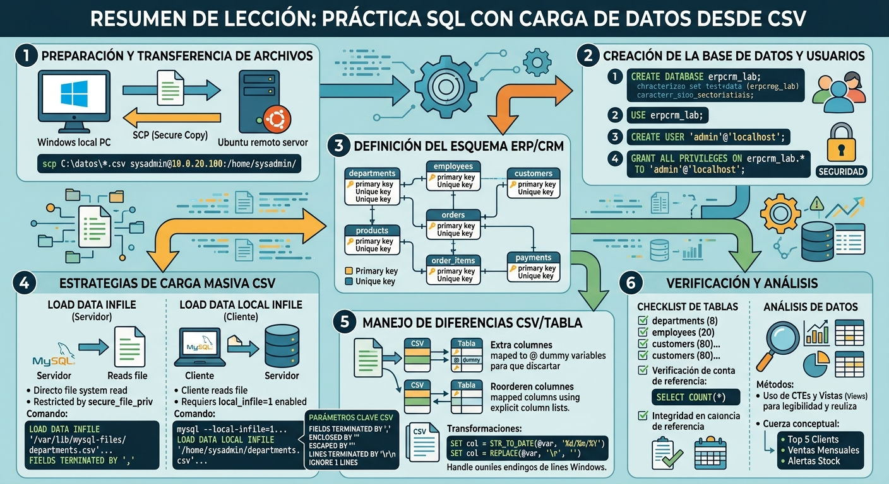

Práctica sql con carga de datos desde csv
1 Introducción y Objetivos
Esta guía unifica la creación, gestión y diseño de una base de datos de tipo ERP/CRM en MySQL (erpcrm_lab), junto con los procedimientos prácticos para transferir archivos desde un entorno local (Windows) a un servidor remoto (Ubuntu) y cargarlos eficientemente utilizando archivos .sql y archivos .csv.
2 Transferencia de Archivos y Configuración Remota
Antes de crear y poblar la base de datos, es necesario trasladar los ficheros desde el cliente local (por ejemplo, Windows) al servidor donde ejecuta MySQL (por ejemplo, Ubuntu).
2.1 Subir Archivos desde Windows a Ubuntu con SCP
scp (Secure Copy Protocol) permite copiar archivos de forma segura mediante SSH. Los siguientes comandos se ejecutan en PowerShell o CMD en Windows.
2.1.1 Subir todos los archivos CSV de una carpeta
scp C:\Users\nombre_usuario\Downloads\*.csv sysadmin@10.0.20.100:/home/sysadmin/Si hay archivos con los mismos nombres en el destino se sobreescribirán.
2.1.2 Subir un archivo concreto
scp C:\Users\nombre_usuario\Downloads\departments.csv sysadmin@10.0.20.100:/home/sysadmin/2.1.3 Subir una carpeta completa
scp -r C:\Users\nombre_usuario\Downloads\datos sysadmin@10.0.20.100:/home/sysadmin/En la terminal de Ubuntu se puede verificar la recepción de archivos con:
ls -lh /home/sysadmin/3 Creación de la Base de Datos y Usuarios
A continuación se define la estructura inicial del entorno de base de datos erpcrm_lab.
3.1 Crear la Base de Datos
CREATE DATABASE IF NOT EXISTS erpcrm_lab
DEFAULT CHARACTER SET utf8mb4
DEFAULT COLLATE utf8mb4_unicode_ci;
USE erpcrm_lab;3.2 Crear Usuario Administrador Específico
Se crea un usuario administradores restringido únicamente a esta base de datos schema.
CREATE USER IF NOT EXISTS 'admin'@'localhost' IDENTIFIED BY 'Cambia_Esta_Clave!2026';
GRANT ALL PRIVILEGES ON erpcrm_lab.* TO 'admin'@'localhost' WITH GRANT OPTION;
FLUSH PRIVILEGES;Para logearse en mysql con ese usario:
mysql -u admin -pComo sólo le hemos dado permiso para conectarse a través de localhost, tendremos que estar en la máquina servidor o conectados a ella via ssh.
4 Definición del Esquema e Identificación de Tablas
A continuación se detalla la creación de las 7 tablas InnoDB que conforman la arquitectura ERP/CRM.
4.1 Tabla departments
Finalidad: Catálogo de departamentos de la organización.
CREATE TABLE departments (
dept_id INT NOT NULL,
dept_name VARCHAR(50) NOT NULL,
PRIMARY KEY (dept_id),
UNIQUE (dept_name)
) ENGINE=InnoDB;4.2 Tabla employees
Finalidad: Registro de empleados internos y personal comercial.
CREATE TABLE employees (
emp_id INT NOT NULL,
dept_id INT NOT NULL,
first_name VARCHAR(50) NOT NULL,
last_name VARCHAR(50) NOT NULL,
email VARCHAR(120) NOT NULL,
hire_date DATE NOT NULL,
salary DECIMAL(10,2) NOT NULL,
PRIMARY KEY (emp_id),
UNIQUE (email),
CONSTRAINT fk_emp_dept
FOREIGN KEY (dept_id) REFERENCES departments(dept_id)
ON UPDATE CASCADE ON DELETE RESTRICT
) ENGINE=InnoDB;4.3 Tabla customers
Finalidad: Datos de empresas y contactos de clientes.
CREATE TABLE customers (
customer_id INT AUTO_INCREMENT NOT NULL,
company_name VARCHAR(40) NOT NULL,
contact_name VARCHAR(120) NOT NULL,
email VARCHAR(150) NOT NULL,
phone VARCHAR(30) NULL,
city VARCHAR(80) NOT NULL,
province VARCHAR(80) NOT NULL,
segment ENUM('SMB', 'MidMarket', 'Enterprise') NOT NULL,
created_at DATE NOT NULL,
PRIMARY KEY (customer_id),
UNIQUE (email),
INDEX idx_cust_province (province),
INDEX idx_cust_segment (segment)
) ENGINE=InnoDB;4.4 Tabla products
Finalidad: Catálogo de productos y servicios ofertados.
CREATE TABLE products (
product_id INT AUTO_INCREMENT NOT NULL,
product_name VARCHAR(150) NOT NULL,
category ENUM('Hardware', 'Software', 'Service') NOT NULL,
unit_price DECIMAL(10,2) NOT NULL,
stock_qty INT NOT NULL,
active TINYINT(1) NOT NULL DEFAULT 1,
PRIMARY KEY (product_id),
INDEX idx_prod_category (category),
INDEX idx_prod_active (active)
) ENGINE=InnoDB;4.5 Tabla orders
Finalidad: Registro de cabeceras de pedidos.
CREATE TABLE orders (
order_id INT AUTO_INCREMENT NOT NULL,
customer_id INT NOT NULL,
sales_rep_emp_id INT NOT NULL,
order_date DATE NOT NULL,
status ENUM('CONFIRMED', 'SHIPPED', 'CANCELLED') NOT NULL,
notes VARCHAR(255) NULL,
PRIMARY KEY (order_id),
CONSTRAINT fk_ord_customer
FOREIGN KEY (customer_id) REFERENCES customers(customer_id)
ON UPDATE CASCADE ON DELETE RESTRICT,
CONSTRAINT fk_ord_employee
FOREIGN KEY (sales_rep_emp_id) REFERENCES employees(emp_id)
ON UPDATE CASCADE ON DELETE RESTRICT,
INDEX idx_ord_date (order_date),
INDEX idx_ord_status (status),
INDEX idx_ord_cust_date (customer_id, order_date)
) ENGINE=InnoDB;4.6 Tabla order_items
Finalidad: Detalle de líneas asociadas a cada pedido.
CREATE TABLE order_items (
order_id INT NOT NULL,
line_no INT NOT NULL,
product_id INT NOT NULL,
quantity INT NOT NULL,
unit_price DECIMAL(10,2) NOT NULL,
discount_pct INT NOT NULL DEFAULT 0,
PRIMARY KEY (order_id, line_no),
CONSTRAINT fk_oi_order
FOREIGN KEY (order_id) REFERENCES orders(order_id)
ON UPDATE CASCADE ON DELETE CASCADE,
CONSTRAINT fk_oi_product
FOREIGN KEY (product_id) REFERENCES products(product_id)
ON UPDATE CASCADE ON DELETE RESTRICT,
INDEX idx_oi_product (product_id)
) ENGINE=InnoDB;4.7 Tabla payments
Finalidad: Registro de pagos por cada pedido (Relación 1:1 con orders).
CREATE TABLE payments (
payment_id INT AUTO_INCREMENT NOT NULL,
order_id INT NOT NULL,
amount DECIMAL(10,2) NOT NULL,
method ENUM('card', 'transfer', 'paypal', 'cash') NOT NULL,
paid_at DATETIME NULL,
status ENUM('PAID', 'PENDING', 'FAILED', 'VOID', 'REFUNDED') NOT NULL,
PRIMARY KEY (payment_id),
UNIQUE (order_id),
CONSTRAINT fk_pay_order
FOREIGN KEY (order_id) REFERENCES orders(order_id)
ON UPDATE CASCADE ON DELETE CASCADE,
INDEX idx_pay_status (status),
INDEX idx_pay_paid_at (paid_at)
) ENGINE=InnoDB;5 Estrategias para Carga masiva de CSV
Existen dos métodos principales para cargar datos CSV en MySQL: LOAD DATA INFILE y LOAD DATA LOCAL INFILE.
5.1 Uso de LOAD DATA INFILE (Lectura del Servidor)
En este modo, el proceso del servidor MySQL (`mysqld`) lee el archivo directamente desde el sistema de archivos del servidor. Por razones de seguridad, MySQL limita los directorios desde los que se pueden leer archivos mediante la variable secure_file_priv.
Para comprobar el directorio autorizado:
SHOW VARIABLES LIKE 'secure_file_priv';Por defecto en sistemas Ubuntu, esta variable apunta al directorio /var/lib/mysql-files/, el cual pertenece al usuario de sistema `mysql`. Debido a estas restricciones de permisos, los usuarios del sistema deben copiar los archivos CSV desde su directorio personal a esta ubicación utilizando privilegios elevados:
sudo cp /home/sysadmin/departments.csv /var/lib/mysql-files/LOAD DATA INFILE '/var/lib/mysql-files/departments.csv'
INTO TABLE departments
FIELDS TERMINATED BY ',' ENCLOSED BY '"' ESCAPED BY '"'
LINES TERMINATED BY '\r\n'
IGNORE 1 LINES
(dept_id, dept_name);5.1.1 Explicación de los parámetros
5.1.1.1 FIELDS TERMINATED BY ','
¿Qué hace?: Define el delimitador de campo o separador de columnas.
En tu caso: Le indica a MySQL que cada columna está separada de la siguiente por una coma (
,).
5.1.1.2 ENCLOSED BY '"'
¿Qué hace?: Define el carácter de envoltura o delimitador de texto.
En tu caso: Indica que los valores de las columnas están entre comillas dobles (
"valor"). Sirve para que, si un texto contiene una coma internamente (por ejemplo"Recursos Humanos, Madrid"), MySQL no lo interprete como una separación de columna.
5.1.1.3 ESCAPED BY '"'
¿Qué hace?: Define el carácter de escape que se usa dentro de los datos para indicar que un carácter especial (como la propia comilla) debe tratarse como texto literal.
En tu caso: Al poner
ESCAPED BY '"', se especifica la convención estándar de archivos CSV de RFC 4180 donde las comillas dobles se escapan duplicándolas ("").Nota: Por defecto en MySQL el carácter de escape suele ser la barra invertida
\(ESCAPED BY '\\').
5.1.1.4 LINES TERMINATED BY '\r\n'
¿Qué hace?: Define el salto de línea (delimitador de filas).
En tu caso:
\r\nes la secuencia de salto de línea estándar de Windows (Carriage Return + Line Feed).
5.1.2 Otras opciones y variantes comunes
5.1.2.1 Variaciones para la terminación de líneas (LINES TERMINATED BY)
LINES TERMINATED BY '\n': Salto de línea estándar de sistemas Linux y macOS modernos (Line Feed).LINES TERMINATED BY '\r': Salto de línea de sistemas macOS antiguos (Carriage Return).Cuando creas o editas un archivo con
nanodirectamente en Linux, el editor guarda las líneas con el salto de línea estándar de Linux/Unix (\n- Line Feed).Sin embargo, si en tu sentencia
LOAD DATAmantuviste la configuración típica de Windows:LINES TERMINATED BY '\r\n'MySQL estará buscando la combinación\r\n(Carriage Return + Line Feed). Al no encontrar ningún retorno de carro\ren el archivo creado connano, tratará todo el archivo CSV como si fuera una única línea gigante. Esto suele provocar que no cargue ninguna fila o lance errores de formato.Para verificar la estructura exacta y los caracteres invisibles del archivo que creaste en Linux, puedes ejecutar este comando en la terminal de Ubuntu:
cat -A tu_archivo.csvSi al final de cada línea ves
$, el salto de línea es de Linux (\n) \(\rightarrow\) usaLINES TERMINATED BY '\n'.Si ves
^M$, el salto de línea es de Windows (\r\n) \(\rightarrow\) usaLINES TERMINATED BY '\r\n'.
Si necesitas cargar ficheros creados en ambos sistemas tendrás que usar un truco:
Solución 1: Usar
LINES TERMINATED BY '\n'+ Limpiar\rconSET(La más recomendada)Tanto los archivos de Linux (
\n) como los de Windows (\r\n) comparten el carácter\nal final de la línea. Si le dices a MySQL que la línea termina en\n, procesará correctamente las filas en ambos casos, pero en los archivos de Windows dejará un retorno de carro impredecible (\r) al final del último campo de cada fila.Puedes eliminar ese
\rdinámicamente usando la funciónREPLACE()oTRIM()en la cláusulaSET:LOAD DATA LOCAL INFILE '/home/sysadmin/archivo.csv' INTO TABLE mi_tabla FIELDS TERMINATED BY ',' OPTIONALLY ENCLOSED BY '"' ESCAPED BY '' LINES TERMINATED BY '\n' -- Acepta filas de Linux y Windows IGNORE 1 LINES (columna1, columna2, @v_ultima_columna) SET ultima_columna = REPLACE(@v_ultima_columna, '\r', '');Si el archivo es de Linux (
\n):@v_ultima_columnano tiene\r, por lo queREPLACEno modifica nada y se guarda tal cual.Si el archivo es de Windows (
\r\n):@v_ultima_columnacaptura el texto con el\ral final.REPLACElo limpia antes de insertarlo en la tabla.
Solución 2: Normalizar los saltos de línea en el sistema operativo antes de cargar
Si trabajas en la terminal de Linux, la mejor práctica es homogeneizar el archivo a formato Unix/Linux antes de ejecutar el
LOAD DATA.Puedes hacerlo al vuelo con la herramienta
dos2unixo contr:# Opción A: Convertir el archivo directamente con dos2unix dos2unix /home/sysadmin/archivo.csv # Opción B: Eliminar los caracteres \r usando tr tr -d '\r' < /home/sysadmin/archivo.csv > /home/sysadmin/archivo_linux.csvUna vez normalizado el archivo a formato Linux, puedes ejecutar tu
LOAD DATAconLINES TERMINATED BY '\n'con total seguridad de que no fallará.
5.1.2.2 Variaciones para delimitadores de campos (FIELDS TERMINATED BY)
FIELDS TERMINATED BY ';': Muy habitual en países europeos (incluida España), donde Excel exporta CSVs usando punto y coma para no confundirlo con la coma decimal.FIELDS TERMINATED BY '\t': Para archivos delimitados por tabulaciones (archivos.tsvo.txt).FIELDS TERMINATED BY '|': Usado habitualmente en ficheros pipe-delimited.
5.1.2.3 Variaciones para la envoltura (ENCLOSED BY)
OPTIONALLY ENCLOSED BY '"': Es una de las más utilizadas en la práctica. Indica que los campos pueden estar envueltos entre comillas (por ejemplo, textos), pero no es obligatorio que todos lo estén (por ejemplo, números sin comillas).FIELDS ENCLOSED BY '': Indica que ningún campo está envuelto en comillas.
5.1.2.4 Manejo de caracteres de escape (ESCAPED BY)
ESCAPED BY '\\': La opción por defecto de MySQL, donde el carácter de escape es\. Si en un texto aparece\", la comilla se interpreta como literal.ESCAPED BY '': Desactiva completamente el carácter de escape. Se suele usar cuando los datos contienen barras invertidas literales (como rutas de WindowsC:\Users\...) que no deben interpretarse como secuencias de escape.
5.1.2.5 Ignorar o seleccionar líneas (IGNORE)
IGNORE 1 LINES: Salta la primera fila del archivo (habitualmente el encabezado con los nombres de las columnas).IGNORE N LINES: Permite saltar las primeras \(N\) filas si el archivo incluye metadatos o varias líneas de comentarios iniciales.
5.2 Uso de LOAD DATA LOCAL INFILE (Lectura del Cliente)
Permite que sea el cliente de MySQL (y no el servidor) quien lea el archivo directamente desde la carpeta del usuario (ej. /home/sysadmin/) y transfiera los datos. Requiere tener habilitada la opción local_infile en cliente y servidor.
5.2.1 Habilitar LOCAL INFILE en Servidor y Cliente
Para utilizar el modificador LOCAL, ambas partes deben tener habilitada la característica:
- Verificar estado en el servdor:
SHOW VARIABLES LIKE 'local_infile';- Activar temporalmente en la sesión en el lado del servidor:
SET GLOBAL local_infile = 1;- Conectarse desde el cliente permitiendo archivos locales en el cliente:
Añadimos --local-infile=1 al comando de conexión:
mysql --local-infile=1 -u admin -p- Habilitar permanentemente en
mysqld.cnf:
Edita el fichero /etc/mysql/mysql.conf.d/mysqld.cnf y añada bajo la seción [msqld]:
sudo nano /etc/mysql/mysql.conf.d/mysqld.cnf
[mysqld]
local_infile=1Reinicia el servicio MySQL:
sudo systemctl restart mysqlLOAD DATA LOCAL INFILE '/home/sysadmin/departments.csv'
INTO TABLE departments
FIELDS TERMINATED BY ',' ENCLOSED BY '"' ESCAPED BY '"'
LINES TERMINATED BY '\r\n'
IGNORE 1 LINES
(dept_id, dept_name);5.3 Comparativa Técnica
| Comando | Quién lee el archivo | Consideración Principal |
|---|---|---|
LOAD DATA INFILE |
Servidor MySQL (mysqld) |
Sujeto a restricción por secure_file_priv |
LOAD DATA LOCAL INFILE |
Cliente mysql |
Requiere activación implícita en cliente y servidor |
6 Carga de Datos Completa del Laboratorio
Procedimiento para cargar todos los ficheros de datos en el orden adecuado, desactivando la comprobación de integridad referencial durante el proceso. Usamos SET FOREIGN_KEY_CHECKS = 0; para desactivar temporalmente la verificación de claves foráneas, lo que permite insertar datos en cualquier orden sin restricciones de integridad referencial. Una vez completada la carga, se reactiva la verificación con SET FOREIGN_KEY_CHECKS = 1;.
Al ejecutar SET FOREIGN_KEY_CHECKS = 1; MySQL no valida retroactivamente los datos que ya han sido insertados mientras la comprobación estaba desactivada. Solo afecta a operaciones futuras: A partir del momento en que ejecutas SET FOREIGN_KEY_CHECKS = 1;, MySQL empezará a verificar la integridad referencial para cualquier instrucción INSERT, UPDATE o DELETE que se intente realizar después.
Los datos existentes no se comprueban automáticamente: Si durante la carga del CSV se insertó una fila en orders que hace referencia a un customer_id inexistente, esa fila permanecerá en la base de datos sin generar ningún error al reactivar el check.
Comportamiento ante modificaciones: Si más adelante intentas modificar (UPDATE) o eliminar (DELETE) un registro huérfano o una fila padre relacionada, MySQL aplicará las reglas de clave foránea (RESTRICT, CASCADE, etc.) a partir de ese momento.
Precisamente por esta razón, es una buena práctica ejecutar consultas de verificación de integridad justo después de reactivar las claves foráneas, haciendo joins con checkeo de nulls.
USE erpcrm_lab;
-- 1. Desactivar temporalmente la verificación de Foreign Keys
SET FOREIGN_KEY_CHECKS = 0;
-- 2. Carga de archivos CSV
LOAD DATA LOCAL INFILE '/home/sysadmin/departments.csv'
INTO TABLE departments
FIELDS TERMINATED BY ',' ENCLOSED BY '"' ESCAPED BY ''
LINES TERMINATED BY '\r\n'
IGNORE 1 LINES;
LOAD DATA LOCAL INFILE '/home/sysadmin/employees.csv'
INTO TABLE employees
FIELDS TERMINATED BY ',' ENCLOSED BY '"' ESCAPED BY ''
LINES TERMINATED BY '\r\n'
IGNORE 1 LINES;
LOAD DATA LOCAL INFILE '/home/sysadmin/customers.csv'
INTO TABLE customers
FIELDS TERMINATED BY ',' ENCLOSED BY '"' ESCAPED BY ''
LINES TERMINATED BY '\r\n'
IGNORE 1 LINES;
LOAD DATA LOCAL INFILE '/home/sysadmin/products.csv'
INTO TABLE products
FIELDS TERMINATED BY ',' ENCLOSED BY '"' ESCAPED BY ''
LINES TERMINATED BY '\r\n'
IGNORE 1 LINES;
LOAD DATA LOCAL INFILE '/home/sysadmin/orders.csv'
INTO TABLE orders
FIELDS TERMINATED BY ',' ENCLOSED BY '"' ESCAPED BY ''
LINES TERMINATED BY '\r\n'
IGNORE 1 LINES;
LOAD DATA LOCAL INFILE '/home/sysadmin/order_items.csv'
INTO TABLE order_items
FIELDS TERMINATED BY ',' ENCLOSED BY '"' ESCAPED BY ''
LINES TERMINATED BY '\r\n'
IGNORE 1 LINES;
LOAD DATA LOCAL INFILE '/home/sysadmin/payments.csv'
INTO TABLE payments
FIELDS TERMINATED BY ',' ENCLOSED BY '"' ESCAPED BY ''
LINES TERMINATED BY '\r\n'
IGNORE 1 LINES
(payment_id, order_id, amount, method, @paid_at, status); --dice el orden en el que va a encontrar los campos en el csv, hay que usar los nombres del campo de la tabla, no los del csv. Si el csv tiene un campo que no está en la tabla, o necesitamos modificarlo, se puede usar una variable de usuario (@paid_at) para capturarlo y luego hacer un SET para asignarlo al campo correspondiente.
SET paid_at = NULLIF(@paid_at, ''); -- Si el campo está vacío, se asigna NULL
-- 3. Reactivar la verificación de Foreign Keys
SET FOREIGN_KEY_CHECKS = 1;7 Verificación e Integridad de la Base de Datos
7.1 Checklist de Verificación de Estructura
Ejecute las siguientes sentencias para validar la declaración de esquemas e índices:
DESCRIBE departments;
SHOW CREATE TABLE employees\G;
SHOW INDEX FROM orders;
SHOW TABLES; -- Debe retornar las 7 tablas del sistema7.2 Verificación de Conteo de Registros
Compruebe la correcta inserción comparando los recuentos esperados:
SELECT 'departments' AS Tabla, COUNT(*) AS Registros FROM departments
UNION ALL SELECT 'employees', COUNT(*) FROM employees
UNION ALL SELECT 'customers', COUNT(*) FROM customers
UNION ALL SELECT 'products', COUNT(*) FROM products
UNION ALL SELECT 'orders', COUNT(*) FROM orders
UNION ALL SELECT 'order_items', COUNT(*) FROM order_items
UNION ALL SELECT 'payments', COUNT(*) FROM payments;Registros esperados: departments (8), employees (20), customers (80), products (40), orders (220), order_items (655), payments (220).
7.3 Comprobación de Integridad Referencial
La siguiente consulta evalúa huérfanos entre la tabla de detalles e inventario. Debe devolver 0 filas.
SELECT oi.*
FROM order_items oi
LEFT JOIN products p ON p.product_id = oi.product_id
WHERE p.product_id IS NULL;7.4 Manejando diferencias entre el csv y el esquema de la tabla
Cuando la estructura de un archivo CSV no coincide exactamente con las columnas de la tabla de destino en MySQL, LOAD DATA INFILE (o LOAD DATA LOCAL INFILE) ofrece mecanismos para mapear, ignorar, transformar o calcular valores al vuelo.
7.4.1 El CSV tiene MÁS columnas que la tabla
Si el archivo CSV contiene campos extra que no existen en la tabla o que no te interesa guardar, se utilizan variables de usuario (identificadas con el prefijo @) para capturar y descartar los datos que no necesitas.
Ejemplo
Imagina que la tabla departments solo tiene dept_id y dept_name, pero el CSV incluye una tercera columna con la ubicación (location):
SQL
LOAD DATA LOCAL INFILE '/home/sysadmin/departments.csv'
INTO TABLE departments
FIELDS TERMINATED BY ',' ENCLOSED BY '"' ESCAPED BY ''
LINES TERMINATED BY '\r\n'
IGNORE 1 LINES
(dept_id, dept_name, @columna_descartada);Se enumeran las columnas en el orden exacto en que vienen en el CSV.
Las columnas del CSV que coinciden con la tabla se asignan directamente.
La columna sobrante del CSV se captura en
@columna_descartada. Como no se vuelve a hacer referencia a esa variable en la sentencia, MySQL simplemente desecha ese valor.
Cuando el CSV contiene columnas intermedias que no existen en la tabla (o que no quieres importar), debes mapear absolutamente todas las columnas del CSV en el orden en que vienen, utilizando variables de usuario en blanco/descartables (@dummy, @ignorar, @tmp, etc.) para los campos que quieras saltarte.
Ejemplo práctico
Tu CSV tiene las siguientes 6 columnas:
fabricante(descartar)product_name(guardar en tabla)fecha_fabricacion(descartar)category(guardar en tabla)especificaciones(descartar)unit_price(guardar en tabla)
Y quieres importar solo product_name, category y unit_price a la tabla products.
LOAD DATA LOCAL INFILE '/home/sysadmin/products.csv'
INTO TABLE products
FIELDS TERMINATED BY ',' ENCLOSED BY '"' ESCAPED BY ''
LINES TERMINATED BY '\r\n'
IGNORE 1 LINES
(
@fabricante, -- 1ª col CSV: se lee en variable temporal y se ignora
product_name, -- 2ª col CSV: se asigna a la columna de la tabla
@fecha_fab, -- 3ª col CSV: se lee en variable temporal y se ignora
category, -- 4ª col CSV: se asigna a la columna de la tabla
@especificaciones, -- 5ª col CSV: se lee en variable temporal y se ignora
unit_price -- 6ª col CSV: se asigna a la columna de la tabla
);¿Cómo funciona internamente?
Lectura por posición: MySQL lee el CSV línea a línea, posición por posición (de izquierda a derecha). No sabe de nombres de cabecera ni de significados; solo sabe la posición (1ª, 2ª, 3ª…).
Uso de variables
@: Al poner una variable como@fabricanteo@dummyen la posición 1, le indicas a MySQL: “Toma el valor de la 1ª columna y guárdalo en la memoria temporal@fabricante”.Descarte automático: Como no utilizas la cláusula
SETpara hacer nada con esas variables temporales (@fabricante,@fecha_fab,@especificaciones), cuando MySQL pasa a la siguiente línea del CSV, los valores anteriores simplemente se desechan y no se insertan en la base de datos.Columnas restates de la tabla: Las columnas de la tabla que no hayan sido mencionadas en el paréntesis (por ejemplo,
product_id,stock_qty,active) tomarán automáticamente su valor por defecto (DEFAULT), se autoincrementarán (AUTO_INCREMENT) o quedarán enNULL, según como esté definida la tabla.
La lista de columnas dentro del paréntesis (...) de un LOAD DATA debe coincidir en NÚMERO Y ORDEN EXACTO con la estructura del archivo CSV, no con la estructura de la tabla de la base de datos, pero el nombre de las columnas debe ser el de la columna de la tabla que va a recibir ese dato.
Si una columna del CSV va a la tabla \(\rightarrow\) pones el nombre del campo de la tabla.
Si una columna del CSV NO va a la tabla \(\rightarrow\) pones una variable temporal (ej.
@dummy).
7.4.2 El CSV tiene MENOS columnas que la tabla
Si el archivo CSV no contiene todas las columnas de la tabla, existen dos escenarios posibles según la definición de la tabla:
7.4.2.1 Escenario A: Las columnas faltantes admiten NULL o tienen un DEFAULT
Si las columnas que faltan en el CSV están definidas con un valor por defecto (DEFAULT 'valor'), auto-incremento (AUTO_INCREMENT) o permiten valores nulos (NULL), basta con mapear solo las columnas presentes en el archivo.
LOAD DATA LOCAL INFILE '/home/sysadmin/products.csv'
INTO TABLE products
FIELDS TERMINATED BY ',' ENCLOSED BY '"' ESCAPED BY ''
LINES TERMINATED BY '\r\n'
IGNORE 1 LINES
(product_name, category, unit_price);7.4.2.2 Escenario B: Las columnas faltantes son NOT NULL sin valor por defecto
Si la columna que falta no puede ser nula y no tiene un valor predeterminado, la carga fallará o asignará el valor implícito según el modo SQL (sql_mode):
En modo estricto (strict mode), lanzará un error y abortará la carga.
Para solucionarlo, debes asignar un valor calculado o estático en la cláusula
SET(ver Sección 4).
7.4.3 Las columnas están en UN ORDEN DIFERENTE
Si el orden de los campos en el CSV no coincide con la definición de la tabla en MySQL, la solución es listar las columnas entre paréntesis al final de la sentencia en el orden en el que aparecen en el CSV.
Ejemplo
La tabla employees está definida como (emp_id, dept_id, first_name, last_name, email...), pero en el CSV las columnas first_name y last_name están invertidas:
LOAD DATA LOCAL INFILE '/home/sysadmin/employees.csv'
INTO TABLE employees
FIELDS TERMINATED BY ',' ENCLOSED BY '"' ESCAPED BY ''
LINES TERMINATED BY '\r\n'
IGNORE 1 LINES
(emp_id, dept_id, last_name, first_name, email, hire_date, salary);MySQL mapeará cada valor del CSV a la columna correspondiente especificada en la lista, independientemente del orden interno de la tabla.
7.4.4 Necesitas TRANSFORMAR o LIMPIAR datos durante la carga
A veces los formatos de datos del CSV no coinciden con los tipos de datos de MySQL (por ejemplo, textos vacíos en vez de NULL, fechas en formato DD/MM/YYYY en lugar de YYYY-MM-DD, o precios con símbolo $).
Para esto se combinan variables de usuario y la cláusula SET.
7.4.4.1 Ejemplo 1: Convertir cadenas vacías en NULL
Como se vio en el archivo de pagos, si la fecha paid_at viene vacía "" en el CSV y se intenta insertar directamente en un campo DATETIME, lanzará error o guardará un valor de fecha inválido (0000-00-00):
LOAD DATA LOCAL INFILE '/home/sysadmin/payments.csv'
INTO TABLE payments
FIELDS TERMINATED BY ',' ENCLOSED BY '"' ESCAPED BY ''
LINES TERMINATED BY '\r\n'
IGNORE 1 LINES
(payment_id, order_id, amount, method, @v_paid_at, status)
SET paid_at = NULLIF(@v_paid_at, '');7.4.4.2 Ejemplo 2: Reformatizar fechas o transformar tipos
Si en el CSV la fecha viene como '31/12/2025' y en MySQL la columna es de tipo DATE (que requiere '2025-12-31'):
LOAD DATA LOCAL INFILE '/home/sysadmin/orders.csv'
INTO TABLE orders
FIELDS TERMINATED BY ',' ENCLOSED BY '"' ESCAPED BY ''
LINES TERMINATED BY '\r\n'
IGNORE 1 LINES
(order_id, customer_id, sales_rep_emp_id, @v_order_date, status, notes)
SET order_date = STR_TO_DATE(@v_order_date, '%d/%m/%Y');7.4.4.3 Ejemplo 3: Calcular valores derivados
Si la tabla requiere guardar el precio con IVA incluido, pero el CSV trae el precio base:
LOAD DATA LOCAL INFILE '/home/sysadmin/products.csv'
INTO TABLE products
FIELDS TERMINATED BY ',' ENCLOSED BY '"' ESCAPED BY ''
LINES TERMINATED BY '\r\n'
IGNORE 1 LINES
(product_name, category, @v_base_price, stock_qty)
SET unit_price = @v_base_price * 1.21;8 Consultas de Análisis de Datos
A continuación se presentan las 5 consultas propuestas para la explotación analítica de la base de datos.
Vamos a realizar el ejercicio de distintas maneras, para que veamos las ventajas que nos aportan a la hora de escribir y leer las consultas el uso de CTE y views.
8.1 Vista de Totales order_totals
Creación de vista para la consulta de totales agrupados por pedido:
CREATE OR REPLACE VIEW v_order_totals AS
SELECT
o.order_id,
o.customer_id,
o.sales_rep_emp_id,
o.order_date,
o.status,
ROUND(SUM(oi.quantity * oi.unit_price * (1 - oi.discount_pct / 100.0)), 2) AS order_total
FROM orders o
JOIN order_items oi ON o.order_id = oi.order_id
GROUP BY o.order_id, o.customer_id, o.sales_rep_emp_id, o.order_date, o.status;8.2 Consulta 1: Top 5 Clientes por Facturación
Obtiene los 5 clientes con mayor gasto acumulado en pedidos no cancelados.
OPCIÓN A, sin subconsulta ni CTE, calculando el importe de cada línea de pedido y sumando por cliente:
SELECT
c.customer_id
,c.company_name
, ROUND(SUM(oi.quantity * oi.unit_price * (1 - oi.discount_pct/100)), 2) as order_total
from customers c
inner join orders o
on o.customer_id = c.customer_id
and o.status !='CANCELLED'
inner join order_items oi
on oi.order_id = o.order_id
group by
c.customer_id
,c.company_name
order by order_total desc
limit 5;OPCIÓN B, creando una subconsulta order_totals para conseguir el importe de cada orden, agrupa por cliente y suma order_total.
with order_totals as (
SELECT
o.order_id,
o.customer_id,
o.sales_rep_emp_id,
o.order_date,
o.status,
ROUND(SUM(oi.quantity * oi.unit_price * (1 - oi.discount_pct/100)), 2) AS order_total
FROM orders o
JOIN order_items oi
ON o.order_id = oi.order_id
GROUP BY o.order_id, o.customer_id, o.sales_rep_emp_id, o.order_date, o.status
)
SELECT
c.customer_id,
c.company_name,
SUM(order_total) AS total_facturado
FROM order_totals ot
JOIN customers c
ON ot.customer_id = c.customer_id
WHERE ot.status != 'CANCELLED'
GROUP BY c.customer_id, c.company_name
ORDER BY total_facturado DESC
LIMIT 5;OPCIÓN C: usando la vista v_order_totals creada previamente:
SELECT
c.customer_id,
c.company_name,
SUM(order_total) AS total_facturado
FROM v_order_totals ot
JOIN customers c
ON ot.customer_id = c.customer_id
WHERE ot.status != 'CANCELLED'
GROUP BY c.customer_id, c.company_name
ORDER BY total_facturado DESC
LIMIT 5;8.3 Consulta 2: Ventas Mensuales por Comercial y Departamento
Agrupa el volumen total facturado por mes, departamento y empleado (solo para pedidos enviados/SHIPPED).
OPCIÓN A, sin CTE ni vista, calculando el importe de cada línea de pedido y sumando por mes, departamento y empleado:
SELECT
YEAR(o.order_date) AS year
, MONTHNAME(o.order_date) AS month
, e.first_name
, e.last_name
, ROUND(SUM(oi.quantity * oi.unit_price * (1 - oi.discount_pct/100)), 2) AS total
, d.dept_name
FROM orders o
LEFT JOIN order_items oi
ON oi.order_id = o.order_id
LEFT JOIN employees e
ON e.emp_id = o.sales_rep_emp_id
LEFT JOIN departments d
ON d.dept_id = e.dept_id
WHERE o.status = 'SHIPPED'
GROUP BY
YEAR(o.order_date)
, MONTH(o.order_date) -- Recomendado incluir MONTH() para agrupar de forma unívoca
, MONTHNAME(o.order_date)
, e.first_name
, e.last_name
, d.dept_name;OPCIÓN B: usando una CTE para reducir los joins
with order_totals as (
SELECT
o.order_id,
o.customer_id,
o.sales_rep_emp_id,
o.order_date,
o.status,
ROUND(SUM(oi.quantity * oi.unit_price * (1 - oi.discount_pct/100)), 2) AS order_total
FROM orders o
JOIN order_items oi ON o.order_id = oi.order_id
GROUP BY o.order_id, o.customer_id, o.sales_rep_emp_id, o.order_date, o.status
)
SELECT
DATE_FORMAT(ot.order_date, '%Y-%m') AS mes,
d.dept_name,
CONCAT(e.first_name, ' ', e.last_name) AS comercial,
SUM(ot.order_total) AS total_ventas
FROM order_totals ot
JOIN employees e ON ot.sales_rep_emp_id = e.emp_id
JOIN departments d ON e.dept_id = d.dept_id
WHERE ot.status = 'SHIPPED'
GROUP BY mes, d.dept_name, comercial
ORDER BY mes ASC, total_ventas DESC;OPCIÓN C: usando la vista v_order_totals creada previamente:
SELECT
DATE_FORMAT(ot.order_date, '%Y-%m') AS mes,
d.dept_name,
CONCAT(e.first_name, ' ', e.last_name) AS comercial,
SUM(ot.order_total) AS total_ventas
FROM v_order_totals ot
JOIN employees e ON ot.sales_rep_emp_id = e.emp_id
JOIN departments d ON e.dept_id = d.dept_id
WHERE ot.status = 'SHIPPED'
GROUP BY mes, d.dept_name, comercial
ORDER BY mes ASC, total_ventas DESC;8.4 Consulta 3: Productos más Vendidos y Alerta de Stock
Calcula las unidades vendidas e importe acumulado (excluyendo cancelados), emitiendo una alerta 'REORDER' si el stock es menor a 20 unidades para productos físicos.
OPCIÓN A: sin CTE
SELECT
p.product_id
, p.product_name
, p.stock_qty
, SUM(oi.quantity) AS unidades_vendidas
, ROUND(SUM(oi.quantity * oi.unit_price * (1 - oi.discount_pct / 100.0)), 2) AS revenue
, CASE
WHEN p.stock_qty < 20 THEN 'REORDER'
ELSE 'OK'
END AS low_stock
FROM order_items oi
INNER JOIN products p
ON oi.product_id = p.product_id
INNER JOIN orders o
ON o.order_id = oi.order_id
WHERE o.status != 'CANCELLED'
AND p.category = 'Hardware'
GROUP BY
p.product_id
, p.product_name
, p.stock_qty
ORDER BY unidades_vendidas DESC;OPCIÓN B: usando una CTE order_totals en este caso no es muy util ya que sólo lo usamos para filtrar los pedidos cancelados:
with order_totals as (
SELECT
o.order_id,
o.customer_id,
o.sales_rep_emp_id,
o.order_date,
o.status,
ROUND(SUM(oi.quantity * oi.unit_price * (1 - oi.discount_pct/100)), 2) AS order_total
FROM orders o
JOIN order_items oi ON o.order_id = oi.order_id
GROUP BY o.order_id, o.customer_id, o.sales_rep_emp_id, o.order_date, o.status
)
SELECT
p.product_id
, p.product_name
, p.category
, p.stock_qty
, SUM(oi.quantity) AS unidades_vendidas
, CASE
WHEN p.category = 'Hardware' AND p.stock_qty < 20 THEN 'REORDER'
ELSE 'OK'
END AS stock_alert
FROM products p
inner join order_items oi ON oi.product_id = p.product_id
inner join order_totals ot ON ot.order_id = oi.order_id
WHERE ot.status != 'CANCELLED'
and p.category = 'Hardware'
GROUP BY
p.product_id
, p.product_name
, p.category
, p.stock_qty
ORDER BY unidades_vendidas DESC;OPCIÓN C: usando la vista v_order_totals creada previamente:
SELECT
p.product_id
, p.product_name
, p.category
, p.stock_qty
, SUM(oi.quantity) AS unidades_vendidas
, CASE
WHEN p.category = 'Hardware' AND p.stock_qty < 20 THEN 'REORDER'
ELSE 'OK'
END AS stock_alert
FROM products p
inner join order_items oi ON oi.product_id = p.product_id
inner join v_order_totals ot ON ot.order_id = oi.order_id
WHERE ot.status != 'CANCELLED'
and p.category = 'Hardware'
GROUP BY
p.product_id
, p.product_name
, p.category
, p.stock_qty
ORDER BY unidades_vendidas DESC;8.5 Consulta 4: Clientes con Ticket Medio Superior a la Media Global
Filtra clientes que hayan realizado al menos 3 pedidos y cuyo ticket medio supere la media global por pedido.
OPCIÓN A: La consulta sin CTE ni vista es compleja de leer y mantener:
SELECT
sub.customer_id
, ROUND(AVG(sub.total_ticket), 2) AS ticket_medio
, COUNT(*) AS n_tickets
FROM (
SELECT
o.customer_id
, o.order_id
, ROUND(SUM(oi.quantity * oi.unit_price * (1 - oi.discount_pct / 100.0)), 2) AS total_ticket
FROM orders o
INNER JOIN order_items oi
ON oi.order_id = o.order_id
WHERE o.status != 'CANCELLED'
GROUP BY
o.customer_id
, o.order_id
) AS sub
GROUP BY
sub.customer_id
HAVING
COUNT(*) >= 3
AND ROUND(AVG(sub.total_ticket), 2) > (
SELECT AVG(orders_amount.total_ticket)
FROM (
SELECT
ROUND(SUM(oi.quantity * oi.unit_price * (1 - oi.discount_pct / 100.0)), 2) AS total_ticket
FROM orders o
INNER JOIN order_items oi
ON oi.order_id = o.order_id
WHERE o.status != 'CANCELLED'
GROUP BY o.order_id
) AS orders_amount
);OPCIÓN B: La consulta equivalente usando CTE es más legible y fácil de mantener:
with order_totals as (
SELECT
o.order_id,
o.customer_id,
o.sales_rep_emp_id,
o.order_date,
o.status,
ROUND(SUM(oi.quantity * oi.unit_price * (1 - oi.discount_pct/100)), 2) AS order_total
FROM orders o
JOIN order_items oi ON o.order_id = oi.order_id
GROUP BY o.order_id, o.customer_id, o.sales_rep_emp_id, o.order_date, o.status
)
SELECT
c.customer_id,
c.company_name,
COUNT(ot.order_id) AS num_pedidos,
ROUND(AVG(ot.order_total), 2) AS ticket_medio_cliente
FROM order_totals ot
JOIN customers c ON ot.customer_id = c.customer_id
WHERE ot.status != 'CANCELLED'
GROUP BY c.customer_id, c.company_name
HAVING num_pedidos >= 3
AND ticket_medio_cliente > (
SELECT AVG(order_total)
FROM order_totals
WHERE status != 'CANCELLED'
)
ORDER BY ticket_medio_cliente DESC;OPCIÓN C: usando la vista v_order_totals creada previamente:
SELECT
c.customer_id,
c.company_name,
COUNT(ot.order_id) AS num_pedidos,
ROUND(AVG(ot.order_total), 2) AS ticket_medio_cliente
FROM v_order_totals ot
JOIN customers c ON ot.customer_id = c.customer_id
WHERE ot.status != 'CANCELLED'
GROUP BY c.customer_id, c.company_name
HAVING num_pedidos >= 3
AND ticket_medio_cliente > (
SELECT AVG(order_total)
FROM v_order_totals
WHERE status != 'CANCELLED'
)
ORDER BY ticket_medio_cliente DESC;8.6 Consulta 5: Pedidos con Pago Pendiente o Fallido
OPCIÓN A: Devuelve los pedidos cuyo estado de pago sea pendiente o fallido antes o en la fecha de cierre 2025-12-31.
select
o.order_id
,p.status
,o.order_date
,ROUND(SUM(oi.quantity * oi.unit_price * (1 - oi.discount_pct / 100.0)), 2) AS amount
from orders o
inner join payments p
on p.order_id = o.order_id
and p.status IN ( 'PENDING', 'FAILED')
inner join order_items oi
ON oi.order_id = o.order_id
where order_date <= '2025-12-31'
group by
o.order_id
,p.status
,o.order_date
ORDER BY o.order_date ASC;OPCIÓN B:
with order_totals as (
SELECT
o.order_id,
o.customer_id,
o.sales_rep_emp_id,
o.order_date,
o.status,
ROUND(SUM(oi.quantity * oi.unit_price * (1 - oi.discount_pct/100)), 2) AS order_total
FROM orders o
JOIN order_items oi ON o.order_id = oi.order_id
GROUP BY o.order_id, o.customer_id, o.sales_rep_emp_id, o.order_date, o.status
)
SELECT
o.order_id,
o.order_date,
c.company_name,
pay.status AS estado_pago,
pay.method AS metodo_pago,
ot.order_total
FROM orders o
JOIN customers c ON o.customer_id = c.customer_id
JOIN payments pay ON o.order_id = pay.order_id
JOIN order_totals ot ON o.order_id = ot.order_id
WHERE pay.status IN ('PENDING', 'FAILED')
AND o.order_date <= '2025-12-31'
ORDER BY o.order_date ASC;OPCIÓN C
SELECT
o.order_id,
o.order_date,
c.company_name,
pay.status AS estado_pago,
pay.method AS metodo_pago,
ot.order_total
FROM orders o
JOIN customers c ON o.customer_id = c.customer_id
JOIN payments pay ON o.order_id = pay.order_id
JOIN v_order_totals ot ON o.order_id = ot.order_id
WHERE pay.status IN ('PENDING', 'FAILED')
AND o.order_date <= '2025-12-31'
ORDER BY o.order_date ASC;| # Carga e Importación de Archivos SQL |
Un archivo .sql contiene instrucciones SQL estructuradas (CREATE TABLE, INSERT, ALTER, etc.) |
## Ejecución mediante privilegios del sistema operativo (sudo) |
Cuando se dispone de acceso de administrador en el sistema operativo (usuario con privilegios sudo), es posible redirigir un archivo .sql directamente hacia el cliente de MySQL mediante la entrada estándar, sin necesidad de interactuar con la contraseña del usuario de base de datos dentro de una sesión: |
sudo mysql < {archivo a ejecutar} |
bash sudo mysql < /home/sysadmin/datos.sql Autenticación mediante el Sistema Operativo (sudo): Al anteponer sudo, ejecutas el cliente de MySQL con los privilegios de superusuario de Linux. En las configuraciones por defecto de Ubuntu (con MySQL o MariaDB), el usuario root de la base de datos utiliza el plugin de autenticación por socket (auth_socket). Esto permite que el sistema operativo valide tu identidad al ser el administrador de Linux, evitando tener que introducir una contraseña de MySQL. |
| ### Importar indicando la base de datos existente Si el archivo no incluye las sentencias CREATE DATABASE o USE en su interior, se puede indicar la base de datos de destino directamente en el comando: |
sudo mysql {base_de_datos} < {archivo a ejecutar} |
| ## Ejecución mediante cuenta de usuario de MySQL El ususuario tiene que tener privilegios de lectura y escritura sobre la base de datos destino. Se puede ejecutar el archivo SQL desde la línea de comandos del sistema operativo, redirigiendo la entrada estándar hacia el cliente de MySQL: |
Si tenemos que ejecutar el script sobre una base de datos ya creada: mysql -u {usuario} -p {base_de_datos} < {archivo a ejecutar} |
Si el archivo SQL contiene la sentencia CREATE DATABASE y USE, no es necesario indicar la base de datos destino: |
| ## Ejecutar el archivo dentro de la consola interactiva de MySQL |
sql SOURCE /home/sysadmin/datos.sql; |
